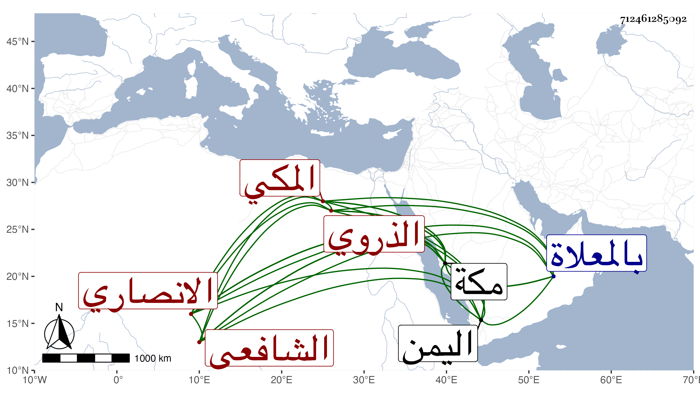

0902Sakhawi.DawLamic.ITO20230111-ara1.EIS1600.712461285092
Biography ID: 712461285092
334
عبد الرحمن بن محمد بن أبي بكر بن علي بن يوسف بن إبراهيم ابن موسى وجيه الدين أبو الفرج بن الجمال أبي الطاهر الانصاري الذروي ثم المكي الشافعي ويعرف بابن الجمال المصري . ولد بمكة ونشأ بها وتفقه بالجمال بن ظهيرة وغيره وسمع على جماعة من شيوخ مكة والواردين إليها كابن صديق وأبي الطيب السحولي والابناسي والمجد اللغوي والتقي الزبيري والشهاب بن مثبت ومحمد ابن عبد الله البهنسي وأجاز له النشاوري وابن حاتم والمليجي والصردى وابن عرفة والغباث العاقولي في آخرين وتزوج ابنة عمه النجم المرجاني وقطن مكة وأشغل الناس بها في الفقه واشتهر بمعرفته كما قاله شيخنا وتقدم ودرس وانتفع به جماعة وكتب بخطه الحسن الكثير كالروضة والمهمات ، ودخل اليمن غير مرة للاسترزاق وكان دينا خيرا طارحا للتكلف زائد التخيل وله نظم كتب عنه التقي ابن فهد وغيره وذكره المقريزي في عقوده ووصفه بالعلامة ، وبرع في الفقه والعزل وله شعر . مات في رجب سنة أربع وثلاثين بمكة ودفن بالمعلاة رحمه الله .
